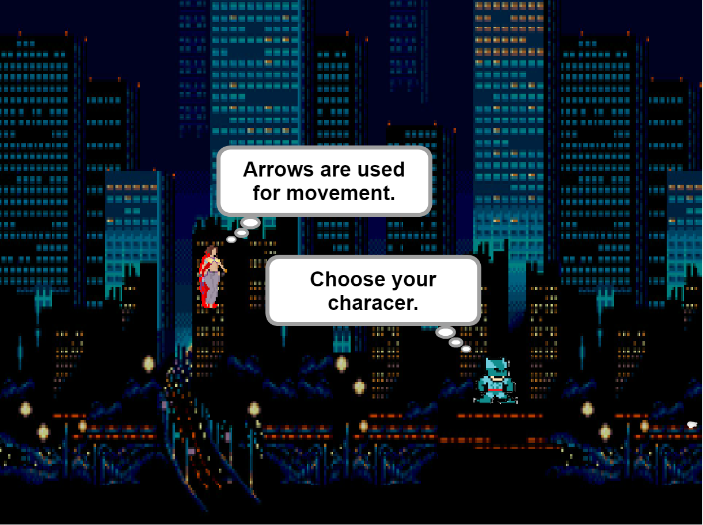
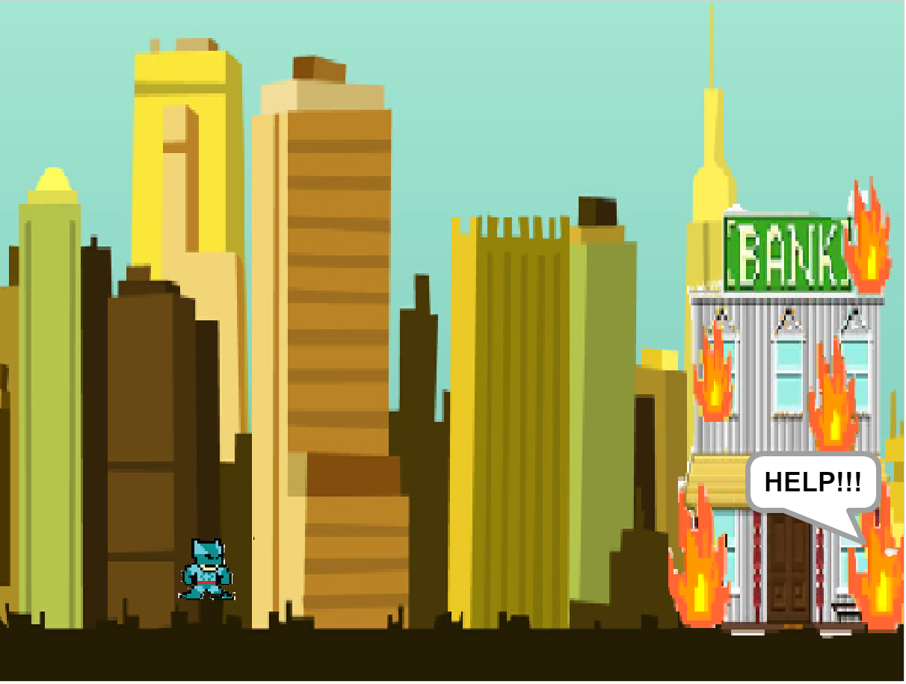
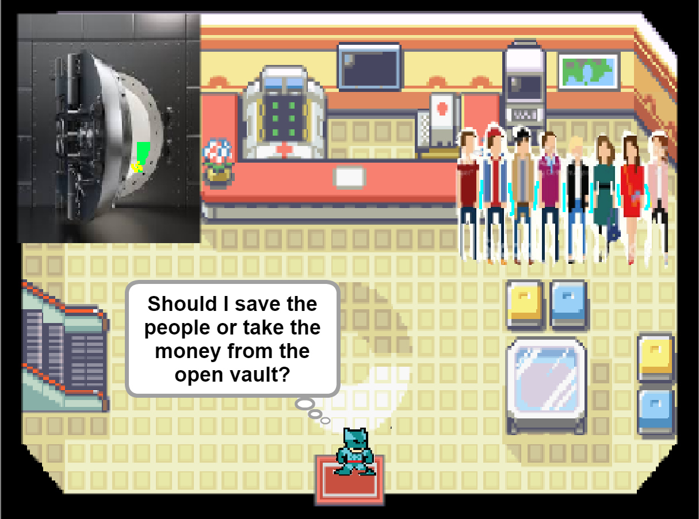

In this scratch game, I worked with Vincent to make a decision-based game using superheroes. The purpose of this game is to allow the player to decide their fate while having an interactive element in the game. Our game was not a success to the players' interest due to dullness, but I will definitely make it better next time. After this big project, I had grown as a programer and understand more about how codes work. In my future projects, I want to put more effort into my work and achieve beyond from what is expected.
  I work on this project with Eddie in which we create a pie chart about NFL viewership in 2017. The purpose of the project was to put data into a visual concept.
In this project, Andrew and I used Scratch to created a dance off of Mitt Romney and Barack Obama. This was one of my first try on scratch and learned how to "animate".
Story thingy
Vincent and I made a superhero story mode game on Scratch. I improved a lot in Scratch because this project was a big story.
Cecilia and I worked on a presentation about viruses. We learned that there are multiple kinds of viruses and each has a unique way of infecting your comupter. After this presentation, I learned how to protect my computer from certain viruses by keeping my computer up to date and avoiding suspicious links.